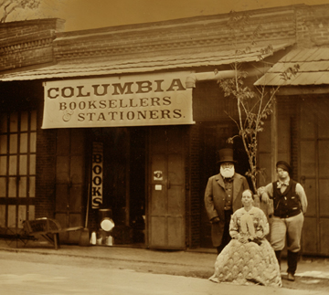

WELCOME TO
THE HISTORIC TOWN OF COLUMBIA.
(Especially all those folk interested in the 19th century Gold Rush era!)

Columbia looking north from Kennebec Hill c1855

Click here for
a nearly complete INDEX of the
History of Columbia
Email contact:
fdpoyde3 (at) Yahoo (dot) com
COME TO COLUMBIA WHERE WE ARE
"ABOVE THE FOG AND BELOW THE SNOW!"
Check out the
Misc. Index by touching the nugget!
grab nugget!
ByTheWay

Image of the store by Will Dunniway & Company - 2007
I came to Columbia in 1999 to see about being a proprietor.
As of the 21st of Dec. 2018 (two months short of 19 years)
I have closed down Columbia Booksellers & Stationers.

Email contact:
fdpoyde3 (at) Yahoo (dot) com
Floyd D. P. Øydegaard was the proprietor.
Here's an image of the
proprietor (2004),
taken on the day he visited the capital.
Floyd D. P. Øydegaard is the WebMaster.
© 2000 - present
Last update: TODAY